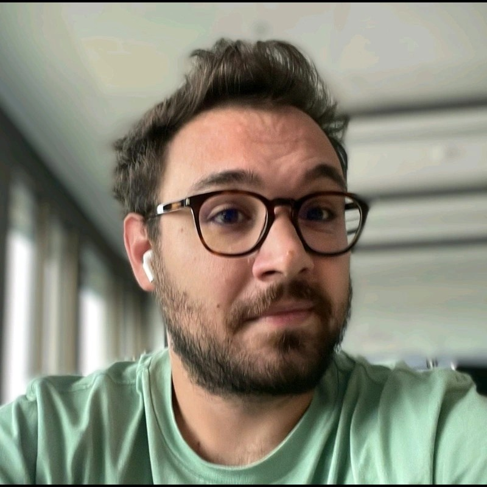
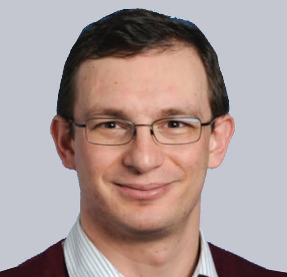

Opening Remarks & Intro to HW/OS Co-design
 Konstantinos Kanellopoulos & Onur Mutlu
·
Konstantinos Kanellopoulos & Onur Mutlu
·
A full-day workshop and tutorial on the principles, methodologies, and practical aspects of hardware/OS co-design for memory management
Traditional computing systems face significant challenges due to rigid interfaces between hardware and operating systems (OS). These interfaces struggle to meet the performance, efficiency, and security demands of modern applications. For example, the growth in data requirements has turned virtual memory (VM) into a major performance bottleneck.
This has led to a paradigm shift towards hardware/OS co-design, where hardware components and OS mechanisms are designed in tandem to optimize the system. This tutorial and workshop will provide a comprehensive introduction to this area, focusing on memory management.
A core component will be a hands-on exploration of Virtuoso, a new simulation framework that enables rapid prototyping and evaluation of HW/OS co-designs. Published at ASPLOS 2025, Virtuoso provides a practical environment for attendees to experiment with co-design strategies and gain practical skills. The workshop is designed for students, engineers, and researchers in computer architecture and operating systems.

ETH Zürich
Konstantinos Kanellopoulos is a 5th-year PhD candidate at ETH Zurich, advised by Prof. Onur Mutlu. His research interests are at the intersection of hardware, software, and operating systems, focusing on performance, programmability, and security. More info on his webpage.

ETH Zürich
Onur Mutlu is a Professor of Computer Science at ETH Zürich. His research focuses on designing fundamentally energy-efficient, high-performance, and robust computing systems, with an emphasis on computer architecture, hardware security, and memory systems. He is an ACM Fellow, IEEE Fellow, and has received numerous honors and awards. He is passionate about making research and education widely accessible. More info on his webpage.
Each invited talk is 25 minutes followed by 5 minutes of Q&A (30 minutes total).
25' talk + 5' Q&A
Konstantinos Kanellopoulos & Onur Mutlu
·
Prof. Jinkyu Jeong
·
The virtual memory system is pervasive in today’s computer systems, and demand paging is the key enabling mechanism for it. At a page miss, the CPU raises an exception, and the page fault handler is responsible for fetching the requested page from the disk. The OS typically performs a context switch to run other threads as traditional disk access is slow. However, with the widespread adoption of high-performance storage devices, such as low-latency solid-state drives (SSDs), the traditional OS-based demand paging is no longer effective because a considerable portion of the demand paging latency is now spent inside the OS kernel. Thus, this paper makes a case for hardware-based demand paging that mostly eliminates OS involvement in page miss handling to provide a near-disk-access-time latency for demand paging. To this end, two architectural extensions are proposed: LBA-augmented page table that moves I/O stack operations to the control plane and Storage Management Unit that enables CPU to directly issue I/O commands without OS intervention in most cases. OS support is also proposed to detach tasks for memory resource management from the critical path. The evaluation results using both a cycle-level simulator and a real x86 machine with an ultra-low latency SSD show that the proposed scheme reduces the demand paging latency by 37.0%, and hence improves the performance of FIO read random benchmark by up to 57.1% and a NoSQL server by up to 27.3% with real-world workloads. As a side effect of eliminating OS intervention, the IPC of the user-level code is also increased by up to 7.0%.
Jinkyu Jeong is an associate professor in the Department of Computer Science at Yonsei University. Before joining Yonsei University, he was an assistant and associate professor in the Department of Semi-conductor Systems Engineering at Sungkyunkwan University. He received his Ph.D. degree in computer science from Korea Advanced Institute of Science and Technology (Advisor: Joonwon Lee) and his B.S. degree from Yonsei University.
 Prof. Dimitrios Skarlatos
·
Prof. Dimitrios Skarlatos
·
Decades-old virtual memory mechanisms have become a major bottleneck in modern systems, introducing significant performance overheads. Studies from Google and Meta reveal that address translation alone can consume up to 25% of the total execution time in memory-intensive workloads. As systems scale to terabyte-class memory, these costs will only grow, constrained by fundamental limits in TLB scaling. In this talk, I will discuss our recent work at the intersection of operating systems and hardware to mitigate translation overheads and outline potential directions for rethinking virtual memory for the next generation of data-intensive computing.
Dimitrios Skarlatos is an assistant professor in the Computer Science Department at Carnegie Mellon University. His research bridges computer architecture and operating systems with a focus on performance, security, and scalability. He has received several awards for his cross-cutting research including the NSF CAREER award, the IEEE CS TCCA Young Computer Architect Award, an Intel Outstanding Researcher Award, the Linux Foundation Faculty Award, the Intel Rising Star Faculty Award, an Amazon Research Faculty Award, two Oracle Faculty Awards, four Meta Faculty Awards in systems, AI, and security, an ISCA Best Paper Award, two ASPLOS Best Paper Awards, four IEEE MICRO Top Picks, and a CACM Research Highlight. His PhD thesis received the joint ACM SIGARCH & IEEE CS TCCA Outstanding Dissertation award, and the David J. Kuck Outstanding Ph.D. Thesis Award. Dimitrios has released several open-source frameworks, with some of his work upstreamed in Linux, adopted by Android, and deployed in production across millions of servers.
 Dr. Georgios Vavouliotis
·
Dr. Georgios Vavouliotis
·
This talk examines the interactions and synergies between virtual memory and hardware prefetching in contemporary microarchitectures. It argues that the increasing complexity of microarchitectural designs has given rise to abundant yet largely untapped metadata, the effective utilization of which could substantially enhance performance efficiency in the post-Moore era. By analyzing the interplay between address translation, caching, and speculative execution mechanisms, this talk highlights how unexploited information flows within modern systems can be systematically leveraged to enhance both performance and efficiency. Finally, it outlines forward-looking directions for microarchitectural designs, emphasizing innovation-driven approaches to push the boundaries of performance and efficiency in next-generation designs.
Georgios Vavouliotis is a Senior Researcher at Huawei Research in Zurich. He received his Ph.D. from Universitat Politècnica de Catalunya (UPC) and Barcelona Supercomputing Center (BSC). His research explores the frontiers of computer architecture, and he is particularly interested in building intelligent microarchitectural components while re-thinking microarchitectural designs for emerging application domains.
 Dr. Jovan Stojkovic
·
Dr. Jovan Stojkovic
·
To democratize access to cloud computing systems, cloud providers have introduced new cloud-native computing paradigms. These emerging paradigms, including microservices and serverless computing, offer significantly simpler programming models alongside cost-efficient billing models. However, cloud-native services differ fundamentally from traditional monolithic applications. They exhibit short execution times, frequent context switching, bursty request patterns, and strict tail latency requirements. Hence, when such workloads run on conventional hardware and software systems, they end up having substantial performance, energy, and resource inefficiencies. In this talk, I will present my research efforts to tackle these challenges by designing hardware platforms and software stacks that deliver orders of magnitude improvements in the efficiency of cloud-native workloads.
Jovan Stojkovic is an incoming assistant professor at the Computer Science department at the University of Texas at Austin. Currently, he is a visiting researcher at Meta. Jovan holds a PhD from the University of Illinois at Urbana-Champaign where he was advised by Professor Josep Torrellas. Jovan's research interests are in computer architecture and systems for cloud and datacenter computing. His research has been awarded multiple accolades such as HPCA Best Paper Award, IEEE Micro Top Pick Honorable Mention, W. J. Poppelbaum Memorial Award, Kenichi Miura Award, and an invitation to speak at the Heidelberg Laureate Forum.
 Rachata Ausavarungnirun
·
Rachata Ausavarungnirun
·
The growth in the new system and architecture designs has enabled significant performance improvement across various types of modern applications. However, these applications' increasing resource demand also creates new challenges as conventional methods to manage virtual memory fail to deliver good performance without non-trivial workarounds across diverse types of architectures. This talk identifies performance bottlenecks created by virtual memory and its metadata management system in modern architectures. Specifically, we provide an in-depth analysis of the bottlenecks and limitations of Linux's huge page on modern applications across multiple architectures. To minimize such performance bottlenecks, we introduce a combination of new techniques with modest hardware changes to manage virtual memory and its metadata. Our proposal allows the system to utilize different policies based on the applications' own demand to eliminate performance pathologies and improve system performance across various architectures.
Rachata Ausavarungnirun is currently the Product Planning Team Lead at MangoBoost, where he leads product strategy and system-level solutions from early R&D to execution. His expertise includes GPU microarchitecture, memory subsystems, virtual memory, high-performance interconnects, and application-specific accelerator design. As a former Royal Thai scholar, Rachata returned to his home country after earning his PhD from Carnegie Mellon University to serve in academia. In this role, he spearheaded regional architecture research activities and became one of Asia's leading academics. His contributions to numerous top-tier research venues are recognized by his inclusion in the ASPLOS Hall of Fame.
Konstantinos Sgouras
·
In this talk, we will introduce Virtuoso, a new simulation framework that enables quick and accurate prototyping and evaluation of the software and hardware components of the VM subsystem. The key idea of Virtuoso is to employ a lightweight userspace OS kernel, called MimicOS, that (i) accelerates simulation time by imitating only the desired kernel functionalities, (ii) facilitates the development of new OS routines that imitate real ones, using an accessible high-level programming interface, (iii) enables accurate and flexible evaluation of the application- and system-level implications of VM after integrating Virtuoso to a desired architectural simulator. We will demonstrate Virtuoso’s versatility by showcasing several case studies and its ability to closely model a real system with low overhead.
Konstantinos Marios Sgouras graduated from the National and Kapodistrian University of Athens in 2024. Currently he is a Master's student in the ITET department (Electrical Engineering and Information Technology) in ETH Zurich. His interests lie in microarchitecture, HW/SW codesign and processing-in-memory and he has been working with the SAFARI research group supervised by Onur Mutlu since 2022.
We will be streaming the entire workshop live on YouTube. A replay will also be available afterwards.
If meeting any of the above is difficult, you can still follow along using the livestream and recorded materials.
The goal of the demo is to provide attendees with a practical, hands-on experience using Virtuoso to prototype and evaluate hardware/OS co-design techniques for memory management. The demo is divided into several parts:
This part will familiarize attendees with the Virtuoso environment. Activities include a recap of Virtuoso's architecture, an introduction to the Virtuoso+Sniper and Virtuoso+Ramulator simulators, and a walkthrough of how to compile and run a basic simulation.
Attendees will actively modify code to implement two hardware-OS co-design techniques:
This section will feature live demonstrations showcasing how Virtuoso enables rapid prototyping of complex OS features (like swap space support) and its flexibility in interfacing with different simulators like Ramulator.
A quick recap of the demonstrated techniques and a teaser of other co-design areas Virtuoso can explore, such as security, energy efficiency, and heterogeneous memory systems.